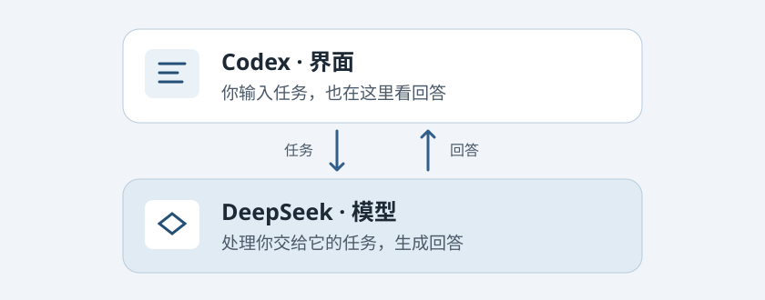

Lesson 1 · 爸爸 · 上海
认识 AI，跑通 DeepSeek
分清工具与模型，用自己的 DeepSeek 账户在 Codex 收到第一条回复。
课前准备 自己的 Mac、DeepSeek 开放平台账户（可现场注册）、一段可独立操作的时间。
1. 用两层来理解 AI
- 界面是操作入口。 你打开 Codex，在里面输入任务。
- 模型负责生成回答。 爸爸这台 Mac 的 Codex 接的是 DeepSeek。
- 界面把结果显示给你。 先试一句简单的问题，看看能否收到回复。
- 最后自己核对。 如果问的是事实，就对照原文。如果问的是操作，就亲手试一步。

上层 · Codex 界面→下层 · DeepSeek 模型
备查：在中国大陆，普通对话用当地可用的 DeepSeek 入口。本地 Codex 接入是否正常，用测试请求和 DeepSeek 账户用量核对。 OpenAI 服务支持地区
2. 用自己的 DeepSeek 账户跑通 Codex
今天要做的是亲手从「有自己的账户」走到「在 Codex 收到一条回复，并能回开放平台找这次用量」。
- 登录开放平台。 在浏览器打开 DeepSeek 开放平台，注册或登录爸爸自己的账户，按页面完成验证。打开账户余额和用量页面，记下测试前的余额与时间。
- 小额充值。 进入充值页面，先核对金额和账户。若页面允许，充约 10 元作为练习预算，支付后回到账户页确认余额。以页面实际可选金额为准，金额不合适就把这一步留待确认。
- 创建 API Key。 在「API Keys」创建一把专用于爸爸这台 Mac 的密钥，可命名为
dad-codex。它像给这个工具使用账户的一把钥匙。创建时在本机妥善保存。暂停屏幕共享，密钥只填入本机接入配置，避开聊天输入框、截图和课程仓库。 - 把新密钥接到已跑通的 Codex。 和家人一起确认这台 Mac 现有 DeepSeek 接入方式及密钥存放位置，保留可恢复的原设置，再把接入所用的密钥换成爸爸新建的那把。模型和接入地址先沿用已验证的配置。DeepSeek 官方方案使用 Responses API，配置示例将密钥存于本机配置文件。实际换密钥前先核对本机接入方式，勿共享配置文件或把备份存进课程目录。改好后完全退出桌面应用、重新打开 Codex，确认当前使用 DeepSeek 配置。若发现本机配置与预期不同，先按 DeepSeek 官方 Codex 接入说明核对，再决定是否调整现有配置。
- 发一条短测试。 在 Codex 新对话输入「请只回复：连接成功。」看到回复后记下发送时间。若提示认证失败，先核对密钥和当前配置。若提示余额不足，回开放平台检查余额。先修正原因，再发下一次测试。
- 回开放平台核对。 打开用量明细，选测试当天，若页面提供按 API Key 筛选，就选新建密钥和测试日期。用当时可见的时间、模型和用量粒度核对，页面只有汇总时就比较测试前后。读一读页面实际提供的输入、输出 token 和费用。Token 是模型处理文字时用的小单位，和屏幕上看到的字数可以不同。余额只显示到有限位数时，优先看用量明细。若暂时没看到记录，记下测试时间和密钥名称，下次刷新再查。
首课优先走到收到测试回复。用量还没核对到，或注册、支付、接入中途停住，就在第 2 节从该步骤继续。
3. 从手头的事挑入口
| 想做什么 | 先试哪个入口 | 一个生活例子 |
|---|---|---|
| 边看着 Mac 边问怎么操作 | 豆包 Mac 客户端的语音通话与屏幕共享 | 「怎么在 Finder 里快速看一眼照片？」 |
| 问问题、想办法、先看一段文字 | 在大陆优先用可用的 DeepSeek 或 Kimi 对话入口 | 「把这三件事写成一条发给家人的周末提醒。」 |
| 给一个练习项目做出或修改具体文件 | Codex | 「在练习目录新建一个能在浏览器打开的家庭菜单网页。」 |
| 把几份材料交给工作助手整理成一个成果 | 了解 ChatGPT Work 和 Kimi Work | 「把几份虚构菜谱整理成一张分类表。」首课认识用途即可。 |
这里按学习场景选入口。有的工具能做相似的事，课堂上先用最容易开始的那个。Codex 云端执行是运行位置的概念，和 ChatGPT Work 这样的工作入口分别理解即可。
收尾
用一句话说出「我打开的是哪个工具，背后用的是哪个模型」。再从上表选一个自己平时会遇到的场景，说说为什么会先打开那个工具。提示词实操放到第 2 节。